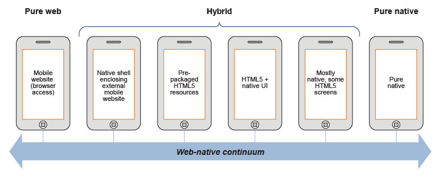

#jsmeetup
@csantanapr
Triangle JavaScript Meetup 07.11.14
Where Web Meets Native, Building Mobile Hybrid Apps Using JavaScript
Created by Carlos Santana / @csantanapr
Carlos Santana
"musician" : false,
"company": "IBM",
"careers" : [
"Server Engineer",
"Mobile Developer",
"Open Source Committer",
"MobileFirst Architect"
],
"dependencies": {
"Family": "~1.0",
"Gadgets": "~0.1",
"Software": "~0.2"
},
"ethnicity": "geek",
"languages": ["spanish","english","javascript"],
"loves what it does": true,
"In 5 years": "function () { [native code] }"
Demo (UX)
“So you want to build a native app?”
It's Not 2007 Anymore
Mobile devices and web views have rapidly improved!

Apache Cordova
Open Source Project for Hybrid Development
Web Technologies You Already Know and Love


(You'll feel right at home)
Cordova Platforms
- iOS
- Android
- Blackberry 10
- Windows Phone 8
- Firefox OS
- Ubuntu
- Tizen
- Amazon FireOS
- Windows 8
Cordova APIs (19 total)
- Accelerometer
- Camera
- Compass
- Device
- Dialogs
- File
- InAppBrowser
- Geolocation
- Network-Information
- Vibration
- more here cordova.io
Cordova Events
- deviceready
- pause
- resume
- backbutton, menubutton, searchbutton
- startcallbutton
- endcallbutton
- volumedownbutton, volumeupbutton
- batterycritical, batterylow, batterystatus
- online
- offline
Demo (Camera API)
getPicture: function(){
navigator.camera.getPicture(
app.onSucessCamera,
app.onFailCamera,
{
quality: 50,
destinationType: Camera.DestinationType.FILE_URI
});
}
onSucessCamera: function(imageURI) {
var image = document.getElementById('myImage');
image.src = imageURI;
},
onFailCamera: function(message) {
alert('Failed because: ' + message);
},

Install Cordova
npm install -g cordova
Step 0: Read the Help
$cordova help

Step 1: Create Multi Platform Project
$ cordova create todd com.example.todd todd
Creating a new cordova project with name "todd" and id "com.example.todd"
Downloading cordova library for www...
Download complete
$cd todd; tree todd
.
├── config.xml
├── hooks
│ └── README.md
├── merges
├── platforms
├── plugins
└── www
├── css
│ └── index.css
├── img
│ └── logo.png
├── index.html
└── js
└── index.js
Step 3: Add Platforms
$ cordova platform add android
Creating android project...
Preparing android project
$ cordova platform add ios
Creating ios project...
Preparing ios project
$ls platforms
platforms
├── android
└── ios
$cordova platform ls
Installed platforms: android 3.4.0, ios 3.4.0
Available platforms: blackberry10, firefoxos
Check Platform requirements
- iOS: Mac and iOS SDK with XCode CLI Tools
- Android: Android SDK
- WP8: Windows8 and Windows Phone 8 SDK
Check iOS requirements
$ xcodebuild --help
$ npm install -g ios-sim
$ ios-sim --version
$ 1.8.2
$ npm install -g ios-deploy
$ ios-deploy --version
$ 1.0.4
Check Android requirements
$ ant -version
$ java -version
$ android --help
$ android list target
$ android list avd
$ adb --help
Check Windows Phone requirements
$ msbuild /?
Discover core Apache Cordova plugins + 3rd party plugins at plugins.cordova.io
Step 4: Add Plugins
$ cordova plugin add org.apache.cordova.device
Fetching plugin "org.apache.cordova.device" via plugin registry
$ cordova plugin add org.apache.cordova.camera
Fetching plugin "org.apache.cordova.camera" via plugin registry
$ cordova plugin ls
[ 'org.apache.cordova.device',
'org.apache.cordova.camera' ]
Step 5: Build App (prepare + compile)
$ cordova build android
Generating config.xml from defaults for platform "android"
Preparing android project
Platform "android" compiled successfully.
$ cordova build ios
Generating config.xml from defaults for platform "ios"
Preparing ios project
Platform "ios" compiled successfully.
Step 6: Run or Emulate App
$ cordova run android
$ cordova emulate ios
Tips for Emulators and Devices
- Android
- Use Device instead of Emulator
- Genymotion Emulators: use run command
- Use Emulator with Intel HAXM and Intel Image
- Enable Android USB Debugging before running on Device
- Tap 7 times on About version info (4.x up)
- Apple iOS
- May need to run emulate command twice
- Use XCode to Run and Emulate, easier to select type
- Register with iOS Developer Program to run on Device
Step 7A: Debug iOS Hybrid App
- Safari Developer Tools to Inspect Simulator or Device
- Safari->Preferences->Advance->Check Show Develop menu
- Develop->iPhone Simulator->index.html
Step 7B: Debug Android Hybrid App
- Chrome Developer Tools Inspect Emulator or Device
- url = chrome://inspect
NodeJS Command Line Tools
- Easy to develop
- Start with node APIs (FileSystem, Process)
- npm handles install and bin path
- cli [verb] [action] [arguments]
- verbs and actions as node modules
- leverage 3rd party module to parse arguments
- Learn from other cli implementations
- Next Step App: node-webkit, Atom-Shell, AppJS
Frameworks
Cloud
Demo: Ionic + Bluemix
Today's Picks
- Apache Cordova/PhoneGap
- Local Meetups (Hack/Dev/Design/Civic)
- Don't Know JS (book series by @getify)
Fin and Gracias
BY Carlos Santana / @csantanapr
Slides: csantana.io